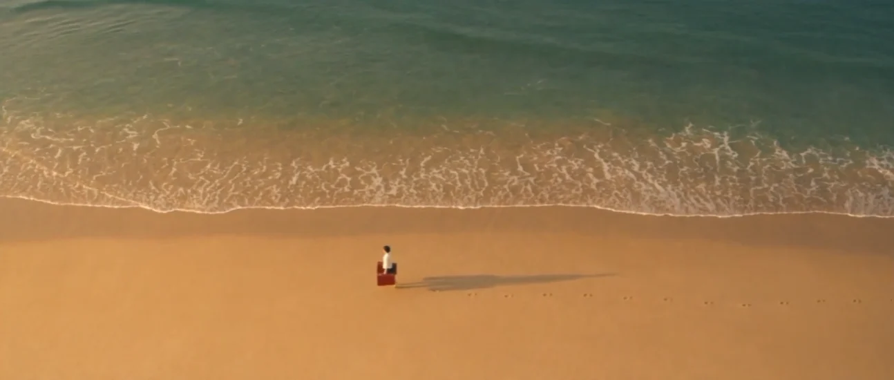
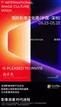
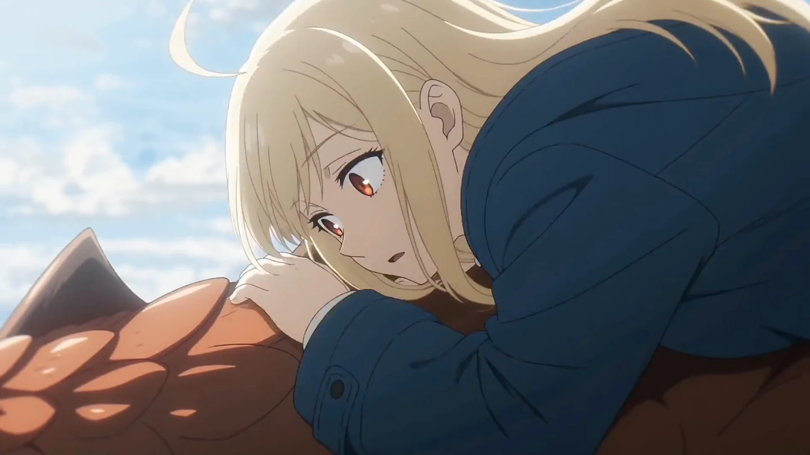

尚子杰
影视 / 动画 / 导演
SZTU2023 – 2027 / 艺术与科技
2810418181@qq.com 浏览作品Shang Zijie2023–2026
影视 / 动画 / 导演
SZTU2023 – 2027 / 艺术与科技
2810418181@qq.com 浏览作品导演实习生
方案策划及平面
承办方 · 视觉设计及策划
AIGC 影视制作
艺术支教
动态交互艺术、创意编程、展示策划、机械原理、概念到形式、设计思维、视觉传达
英语 · 四级 / 普通话 · 母语
从 0 到 1 跑通流程拿下校级认证，经常在社团里组织大家一起玩 AI、做分享。
做校园新媒体运营，也自己下场做短视频创作者，喜欢拆解各大视频平台的内容趋势。
统筹落地校级大型活动，养成目标导向思维，协调不同团队完成任务。
我习惯用视觉去传递情绪和思考。拿过一些数字艺术设计奖项，作品也在坪山美术馆和香港理工展出过。不论是用微观视角拍城市里人的疏离感，还是用交互技术呈现传统扎染，我一直在尝试用冰冷的底层技术，讲出有温度、有人味儿的故事。
我与 AI 的故事有很多。25 年靠着 AI 辅助开发工具搭建了 agent 助手，又依靠 agent，在并非编程专业出身的前提下，完成基于 UE5 蓝图的 AI NPC 语音交互及行为控制系统和首次 Web3D 艺术交互网站的开发；23 年依靠 ComfyUI 的高效工作流，一个月完成了和公教出版社合作的 6 千张平面教辅插图，并且用 AIGC 制作影片并获奖。这一路学到了很多学校里学不到的东西。
在做事上，我被好奇心和自驱力推着走。23 年开始自己摸索了 SD 本地部署、ComfyUI 工作流和 LoRA 训练。同时，从零搭过一个校级社团，也拿下了 PM 证书。这些经历让我更擅长解决实际问题，也让我敢于在跨学科尝试的同时做出成果。
面对 AIGC 每天都在变的世界，我保持着空杯心态，希望带着这份执念和敏感，在真实的业务中，做出真正能打动人的东西。
吉莉情绪 MV、韩团 ASMR、AI 女团 MV 与虚拟 IP 标杆案例全景调研
围绕金卡揭晓设计开卡分镜。经历 8 次提案反馈，从 AI 预演到游戏内上线。

AI × 创作 · 视听语言分享讲座 ·《海边归人》demo 短片

PV 对比分析、片段预演 AI 流程还原与概念审核的导演工作台

经典影视桥段 + 二创：能快速带来情感张力的改编短片

4 天 3 版方案：角色设定、表演构思、影调设定、动效设计

光子家属开放日视频：实拍素材、layout，提前半周交付

双主角修脸 · 叙事优化：哭戏特写与演讲英雄镜头

个人 AIGC 创作

突破 AI 长镜头时长上限，物件接力把演职员表藏进一个镜头
个人作品获奖参展
受邀参展 · 青年艺术家 · 2025.06.25 – 10.24

思辨艺术 · 国家级一等奖 · 2025.08
全国二等奖 · 2025.02
全国三等奖 · 2025.02

个人作品参展 · 2025.05.23 – 05.25

国优奖
PM 证书

全校最高级别奖学金 · 20000 元 · 全校前 0.7% · 2026.01
2025 · 另获 2024 优秀学生干部

